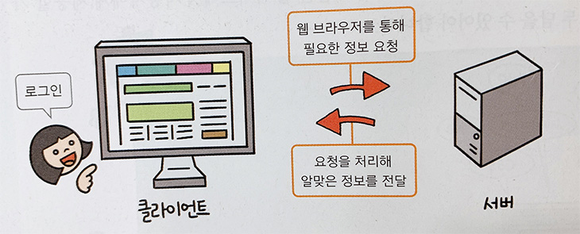

JUHA, HTML5 + CSS3 Web Standards
[웹의 개념]
World Wide Web, WWW, W3라는 용어로 쓰임.
인터넷에 연결된 컴퓨터들을 통해 사람들이
정보를 공유할 수 있는 전 세계적인 정보 공간
[웹 서비스의 이해]
웹의 동작 과정은 서버(server)와 클라이언트(client)로 나눌 수 있다.
서버는 정보를 제공해 주는 쪽이고 클라이언트는 정보를 요청하는 쪽으로
웹사이트는 정보를 검색하거나 처리하는 일을 서버에서 하고
사용자의 요청을 받아 처리한 결과를 클라이언트에게 보여준다.
즉, 클라이언트는 사용자와 서버 사이에서 화면으로 보여주는 역할을
함.
(예: 로그인 하는 과정)

[웹 개발]
웹개발이란, 인터넷이나 인트라넷을 위한 웹사이트를 개발하는 일을 가리킨다.
웹 개발은 가장 단순한 단일 정적 문서의 텍스트에서부터 가장 복잡한 웹 기반 인터넷 애플리케이션, 전자 비즈니스, 소셜 네트워크 서비스에 이르기까지 개발 범위가 다양하다.
(*인트라넷: 회사(조직) 내부의 업무를 통합하는 정보 시스템으로 그 회사 내에서만 사용 가능한 '사내망'으로 회사 내부에서만 접속이 가능)
| 구분 | 프론트엔드 개발 | 백엔드 개발 |
|---|---|---|
| 정의 | 사용자 앞에 보이는 영역 웹 브라우저 화면에 보이는 것을 다룸. |
사용자 뒤에 보이지 않는 영역 웹 사이트의 회원 정보나 게시판 글 등 서버에 데이터베이스의 형태로 저장된 것을 설계하거나 처리하는 것을 다룸 |
| 사용 프로그램 및 언어 | HTML, CSS, 자바스크립트,깃/깃허브 | |
| 제이쿼리, 리액트, 앵귤러 등 | 자바, PHP, 파이썬 등 | |

[웹 편집기]
웹 코드를 작성하는 프로그램
- 1. 비주얼 스튜디오 코드 (Visual Studio Code): 마이크로소프트가 마이크로소프트 윈도우, macOS, 리눅스용으로 개발한 소스 코드 편집기 (무료), 다양한 플러그인 지원
- 2. 에디트 플러스(유료)
- 3. 서브 라임 텍스트 (SublimeText): 무료, 다양한 플러그인 지원.
- 4. Eclipse(이클립스) : 통합 개발 환경(IDE, Integrated Development Environment) 주로 java언어 코딩
- 5. Atom : 오픈소스. 가볍고 가독성 좋음.
[웹 브라우저]
웹 문서를 보는 프로그램
[웹 서비스 용어]
| 인터넷 | 전 세계를 연결하는 국제 정보 통신망으로, 컴퓨터나 스마트폰 같은 디지털기기로 연결되어 사람들이 정보를 공유할 수 있는 공간 |
|---|---|
| 웹서버 |
하드웨어, 소프트웨어 혹은 두 개가 같이 동작하는 것을 의미함. 1. 하드웨어 측면: web server는 web server의 소프트웨어와 website의 컴포넌트 파일들을 저장하는 컴퓨터를 말함. (컴포넌트 파일에는 HTML 문서, images, CSS stylesheets, 그리고 JavaScript files이 있음.) Web server는 인터넷에 연결되어 웹에 연결된 다른 기기들이 웹 서버의 데이터(컴포넌트 파일들)를 주고받을 수 있도록 한다. 2.소프트웨어 측면: web server는 기본적으로 웹 사용자가 어떻게 호스트 파일들에 접근하는지를 관리한다. 이 문서에서 web server는 HTTP서버로 국한함. * HTTP서버는 URL(Web addresses)과 HTTP(브라우저가 웹 페이지를 보여주기 위해 사용하는 프로토콜)의 소프트웨어 일부를 일컫는다. |
| 웹호스팅 | 웹 서버의 일정 공간을 임대하여 사용하는 호스팅 서비스 |
| IP(인터넷 프로토콜) | 인터넷에 연결된 컴퓨터의 주소, 다른 컴퓨터와 구별되도록 갖는 고유한 주소(예 : 210.112.132.344) |
| 도메인 | 웹사이트의 주소, IP 주소를 대신하여 사용하는 주소, 실제 자료가 존재하는 ip주소로 쉽게 접근하도록 문자로 이루어진 개념. |
| 네임서버 = DNS(domain name system) | 도메인 주소를 실제 IP주소로 연결하여 주는 시스템, 네임(DNS)서버에 도메인을 등록하여 IP주소로 이동할 수 있다. |
| 트래픽 | 웹에서 다운받을 수 있는 정보제공량을 말하며, 정보의 양이 많을 수록 트래픽의 용량도 많이 필요하다. |
| 데이터베이스 | 웹사이트의 게시판이나 갤러리에 업로드 되는 정보들을 저장하는 곳 |
| FTP | 인터넷을 통한 파일송수신 서비스 프로토콜(통신규약) |
[반응형웹&적응형웹]
| 반응형웹 (Responsive Web) : |
1. 미디어 쿼리를 사용해 기기 화면의 크기를 확인하고 유연한 이미지와 그리드를 활용해 화면 크기 변화에 따라 페이지의 레이아웃을 조절하는 기법. 2. 하나의 디자인만을 사용해 다양한 기기에 대응할 수 있어 개발이 간편하다는 장점이 있다. |
|---|---|
| 적응형웹(Adaptive web) |
1. 서버나 클라이언트에서 웹에 접근한 기기를 체크해 그 기기에 맞는 디자인을 제공하는 개념 2. 모바일의 경우 모바일용 디자인을, 데스크톱의 경우 데스크톱용 디자인을 제공. 3. 기기별로 다른 템플릿을 제작해야 할 필요가 있다. |
| 반응형 웹 | 적응형 웹 | |
|---|---|---|
| 기기 및 화면 감지 방법 | 미디어 쿼리로 기기 감지 | 서버 또는 브라우저에서 기기 감지 |
| 디자인 | 하나의 디자인(사이즈별 레이아웃 디자인은 필요함.) | 기기마다 다른 디자인 필요 |
| 콘텐츠 | 모든 콘텐츠 다운로드 필요 | 기기에 맞는 콘텐츠만 다운로드 |
| URL주소 | 하나의 URL사용 | 최소 2개 이상의 url 사용 |
| 로딩 속도 | 속도 느림 | 속도 빠름 |
| 기존 사이트 존재시 | 기존 사이트 변경 및 재구축 필요 | 기존 사이트 변경없이 구축 가능 |